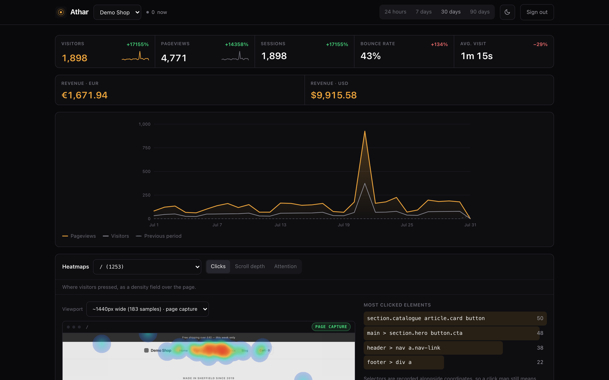

Athar
Analytics where the data never leaves your server.
Athar (أثر — "trace, footprint," and "impact") is a self-hosted web analytics tool with heatmaps and ecommerce tooling. It ships as a single static Go binary with the dashboard embedded — run it on a laptop, a home server, a Raspberry Pi, or a cloud box. SQLite by default with zero setup; Postgres is a config flag on the same binary.

What's in the box
Umami and Ackee are MIT but pageviews-only. PostHog has heatmaps but needs ClickHouse, Kafka and Redis. Matomo's heatmaps are a paid plugin. Plausible, GoatCounter and OpenReplay are copyleft. MIT, lightweight, heatmaps, and ecommerce in one binary was the gap.
Cookieless collection
The tracker sets and reads no cookie and no storage. Visitor identity is a daily, salted hash computed server-side — nothing for a visitor to clear, nothing to ask consent for.
Heatmaps
Click, scroll-depth, and per-10%-band attention samples, stored as page-relative percentages with the clicked element's CSS selector — not pixels, not a DOM snapshot. No text, no form values, no keystrokes.
A tiny tracker
athar.js is 3.3 KB raw, 1.6 KB gzipped. Auto pageviews including SPA route changes, custom events, revenue events — one script tag.
Local GeoIP
Country, region and city resolved in-process from a local MaxMind-format .mmdb file. No lookup service, no network call. Unconfigured, the location fields are simply empty.
Full reporting
Pageviews, visitors, sessions, bounce rate, average visit time, top/entry/exit pages, referrers, UTM campaigns, browser/OS/device/screen/language, geography, custom events, realtime active visitors, and revenue totals per currency.
Real access control
Argon2id password hashing, server-side sessions, double-submit CSRF on every state-changing route, per-username-and-address rate-limited login, per-website owner/editor/viewer roles, and revocable public share links.
Quick start
Build from source and it listens on loopback with a SQLite file next to the binary. No account, no cloud, nothing to sign up for.
# build from source — Go 1.25+ and Node 22+ git clone https://github.com/vul-os/athar.git cd athar npm install && npm run build:all ./athar # drop one script tag on your site <script defer src="https://analytics.example.com/athar.js" data-website-id="YOUR_WEBSITE_ID"></script>
- 1Run itListens on
http://127.0.0.1:3100, stores to./athar.db. The first visit creates the admin account. - 2Add a siteCreate a website in the dashboard, then paste the one-line script tag it gives you. Add
data-heatmap="true"to also collect heatmaps. - 3Go publicAthar binds loopback by default. Reach it from the internet with a tunnel (cloudflared, ngrok, Ephor) or a reverse proxy — both talk to loopback, so nothing is bound wide open by accident.
The daily salt
Heatmaps and behavioural capture are only ethical because the site owner self-hosts and holds the data — the operator can see their own visitors, plainly. What Athar removes is the part that doesn't need to exist: a persistent identifier, a third-party lookup, a raw IP sitting in a table.
Unlinkable across days
The salt rotates at UTC midnight, so today's hash for a visitor has no mathematical relationship to yesterday's. Cross-day tracking isn't merely unimplemented — it can't be derived from what's stored.
No cross-site profile
The website id sits inside the hash itself, so the same person on two sites hosted by one Athar instance produces two unrelated hashes. One operator cannot build a cross-site profile out of their own database.
The IP never lands
The raw IP is used for exactly two things at ingest — this hash and a local GeoIP lookup — then it's gone. It is never written to the database or to a log.
Cookieless by construction
No cookie is set, so there is no cookie banner to show for the default configuration — this is cookieless and no-PII by design, which is a GDPR-friendly posture. It is not a compliance claim: whether a given deployment is GDPR-compliant depends on how it's run, not on the software alone.
Part of Vulos
Vulos is a family of open, self-hostable apps built on one thesis: your data does not have to leave your machine to be useful. Athar is a fully standalone product — it never requires Vulos infrastructure to run. Self-hosting it yourself is always the default path, and never second-class.
Explore Vulos →